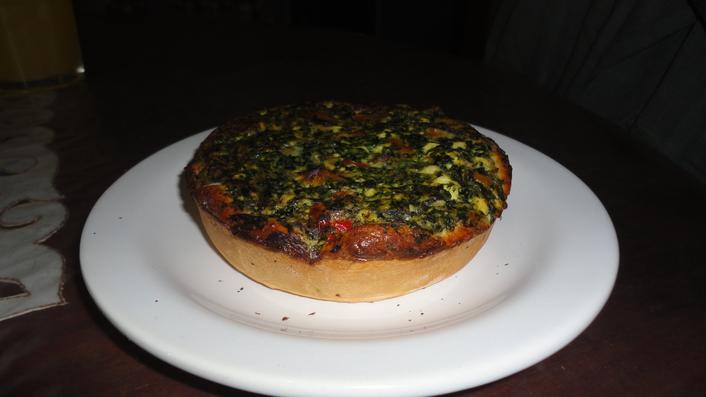
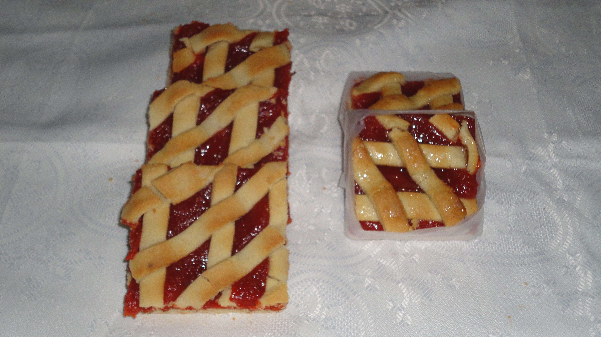

Gastronomia
El caniche o poodle es una raza canina que durante el siglo XV se consideró de uso exclusivo de los aristocratas y nobles. Hasta el era un perro cobrador de aguas: recuperaban las presas ya cazadas que habian caido al agua, como patos y cisnes.
Hoy en día se les encuentra frecuentemente en las exposiciones caninas de belleza. Existen cuatro variedades: grande, mediano, enano y toy. Aparte del comun, tambien existe la variedad Cordele.

Pasteleria
El caniche o poodle es una raza canina que durante el siglo XV se considero de uso exclusivo de los aristocratas y nobles. Hasta el era un perro cobrador de aguas: recuperaban las presas ya cazadas que habian caido al agua, como patos y cisnes.
Hoy en dia se les encuentra frecuentemente en las exposiciones caninas de belleza. Existen cuatro variedades: grande, mediano, enano y toy. Aparte del comun, tambien existe la variedad Cordele.

Reposteria
El caniche o poodle es una raza canina que durante el siglo XV se consideró de uso exclusivo de los aristocratas y nobles. Hasta el era un perro cobrador de aguas: recuperaban las presas ya cazadas que habian caido al agua, como patos y cisnes.
Hoy en día se les encuentra frecuentemente en las exposiciones caninas de belleza. Existen cuatro variedades: grande, mediano, enano y toy. Aparte del comun, tambien existe la variedad Cordele.